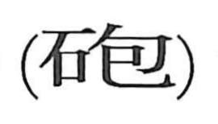

砲

Kun: | On: hou
cannon ・ artillery
Explanation
砲 is a phono-semantic character with 包 as its sound marker. 包 originally depicts an embryo in the belly and carries the sense of wrapping or putting something inside, which neatly evokes the way a charge is packed into the barrel (the hoshin, or cannon tube) before a shot is fired. In early writing the word also appears as 礮, where a different phonetic element marks the on-reading; both that element and 包 are taken as echoing the explosive report of a cannon. A related graph, 炮—elsewhere “to roast” or “to burn”—interchanges with 礮 and is used for the meaning “cannon,” as in 大砲. In usage, 銃 denotes the smaller firearm, while 砲 refers to the large gun.